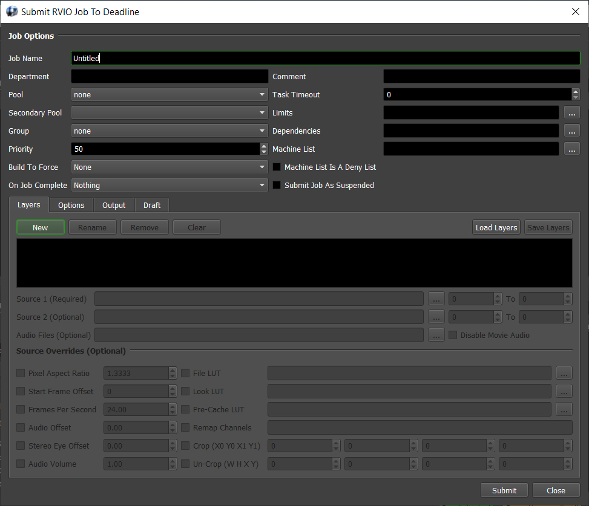
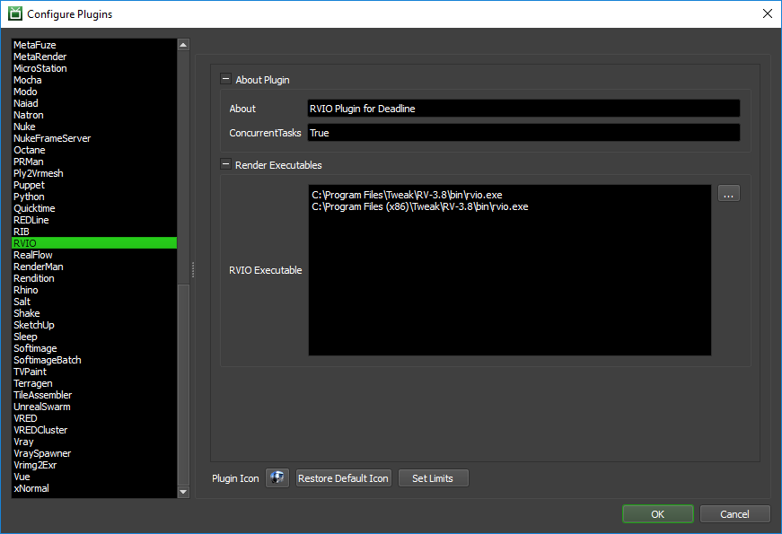

RVIO¶
Job Submission¶
You can submit RVIO jobs from the Monitor, or you can right-click on a job and select ‘Scripts’ -> ‘Submit RVIO Job To Deadline’ to automatically populate some fields in the RVIO submitter based on the job’s output.
Submission Options¶
The general Deadline options are explained in the Job Submission documentation, and the Draft/Integration options are explained in the Draft and Integration documentation.
The RVIO submitter allows you to create and save Layers, each of which can contain one or two source images, an arbitrary number of audio files, and a list of overrides.
Click the New button to add a new Layer.
Click the Rename button to rename the selected Layer.
Click the Remove button to remove the selected Layer.
Click the Clear All button to remove all Layers.
Click the Load Layers button to load saved Layers from disk.
Click the Save Layers button to save the list of current Layers to disk.
For Layers, the only required setting is the Source 1 file(s). If specifying a sequence, you can set the range to the right of the file name (the same for the Source 2 file if specified). Note that the .rv file format is also supported as a Source file. For Audio Files, a comma separated list is used to allow the submission of multiple files. Other than submitting at least one Layer, the only other required option is the Output File under the Output tab. See the RVIO Documentation for more information about the available options and overrides.
Codec Lists¶
The RVIO submitter pulls its codec settings from the GetRawCodecText() function in \\your\repository\scripts\submission\RVIOSubmission.py. The raw text was retrieved from running “rvio.exe -formats” in a command prompt. This means that if your installation of RVIO supports additional codecs that aren’t available in the submitter, you can run the following and then copy the text in the resulting Codecs.txt file and paste it between the triple quotes in GetRawCodecText():
rvio.exe -formats > Codecs.txt
Plugin Configuration¶
You can configure the RVIO plugin settings from the Monitor. While in power user mode, select Tools -> Configure Plugins and select the RVIO plugin from the list on the left.
Note, if the executable supports a MAJOR.MINOR.REVISION (9.0.123) numbering system in its path, then you will need to configure the explicit exe path to the particular revision that you have installed on your machines. Deadline does not track every possible revision available or indeed where it might be custom installed to, so a studio should verify their exe paths are correct for each application version they choose to use with Deadline. Multiple exe paths can still be declared and the first one that is found on a particular Worker on a particular platform will be used from the exe list.
Render Executables
RVIO Executable: The path to the rvio executable file used for rendering. Enter alternative paths on separate lines.
FAQ¶
Currently, there are no FAQs for this plugin.
Error Messages and Meanings¶
This is a collection of known RVIO error messages and their meanings, as well as possible solutions. We want to keep this list as up to date as possible, so if you run into an error message that isn’t listed here, please contact Deadline Support and let us know.
Currently, no error messages have been reported for this plugin.

{kind=link}
{kind=link}